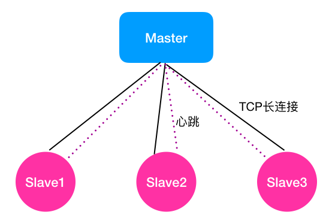
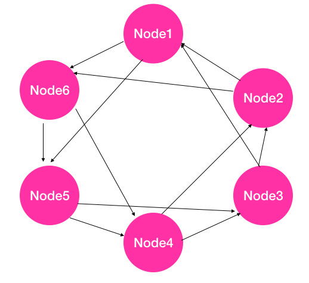
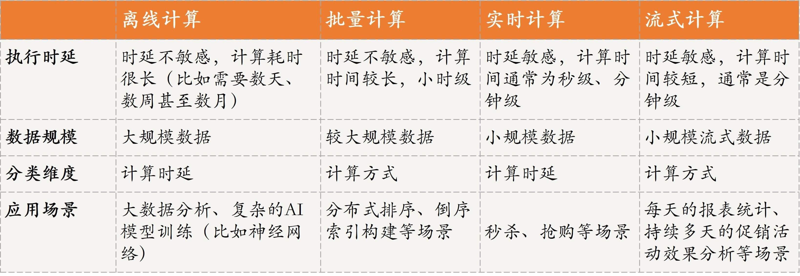

- 00 开篇词 四纵四横，带你透彻理解分布式技术.md.html
- 01 分布式缘何而起：从单兵，到游击队，到集团军.md.html
- 02 分布式系统的指标：啥是分布式的三围.md.html
- 03 分布式互斥：有你没我，有我没你.md.html
- 04 分布式选举：国不可一日无君.md.html
- 05 分布式共识：存异求同.md.html
- 06 分布式事务：All or nothing.md.html
- 07 分布式锁：关键重地，非请勿入.md.html
- 08 分布式技术是如何引爆人工智能的？.md.html
- 09 分布式体系结构之集中式结构：一人在上，万人在下.md.html
- 10 分布式体系结构之非集中式结构：众生平等.md.html
- 11 分布式调度架构之单体调度：物质文明、精神文明一手抓.md.html
- 12 分布式调度架构之两层调度：物质文明、精神文明两手抓.md.html
- 13 分布式调度架构之共享状态调度：物质文明、精神文明多手协商抓.md.html
- 14 答疑篇：分布式事务与分布式锁相关问题.md.html
- 15 分布式计算模式之MR：一门同流合污的艺术.md.html
- 16 分布式计算模式之Stream：一门背锅的艺术.md.html
- 17 分布式计算模式之Actor：一门甩锅的艺术.md.html
- 18 分布式计算模式之流水线：你方唱罢我登场.md.html
- 19 分布式通信之远程调用：我是你的千里眼.md.html
- 20 分布式通信之发布订阅：送货上门.md.html
- 21 分布式通信之消息队列：货物自取.md.html
- 22 答疑篇：分布式体系架构与分布式计算相关问题.md.html
- 23 CAP理论：这顶帽子我不想要.md.html
- 24 分布式数据存储系统之三要素：顾客、导购与货架.md.html
- 25 数据分布方式之哈希与一致性哈希：“掐指一算”与“掐指两算”的事.md.html
- 26 分布式数据复制技术：分身有术.md.html
- 27 分布式数据之缓存技术：“身手钥钱”随身带.md.html
- 28 分布式高可靠之负载均衡：不患寡，而患不均.md.html
- 29 分布式高可靠之流量控制：大禹治水，在疏不在堵.md.html
- 30 分布式高可用之故障隔离：当断不断，反受其乱.md.html
- 31 分布式高可用之故障恢复：知错能改，善莫大焉.md.html
- 32 答疑篇：如何判断并解决网络分区问题？.md.html
- 33 知识串联：以购买火车票的流程串联分布式核心技术.md.html
- 34 搭建一个分布式实验环境：纸上得来终觉浅，绝知此事要躬行.md.html
- 特别放送 Jackey：寄语天涯客，轻寒底用愁.md.html
- 特别放送 分布式下的一致性杂谈.md.html
- 特别放送 崔新：追根溯源，拨开云雾见青天.md.html
- 特别放送 徐志强：学习这件事儿，不到长城非好汉.md.html
- 特别放送 那些你不能错过的分布式系统论文.md.html
- 结束语 为什么说提升职业竞争力要从尊重、诚实开始？.md.html
- 捐赠
22 答疑篇：分布式体系架构与分布式计算相关问题
你好，我是聂鹏程。今天，我来继续带你打卡分布式核心技术。
到目前为止，“分布式技术原理与算法解析”专栏已经更新21篇文章了，我已经为你介绍了分布式技术四纵四横知识体系中的三横，即“分布式资源管理”“分布式计算技术”和“分布式通信”，以及四纵中的“分布分布式式协同”和“分布式调度”。
在这里，我首先要感谢你们坚持学习每一篇文章，以及对每一道思考题的积极思考与讨论，并且还在此基础上对类似问题进行了扩展。
比如，@1024、@每天晒白牙、@游弋云端、@Jackey和@Dale等同学，对双主问题展开了激烈的讨论；再比如，@xj_zh、@mt11912、@小白啊、@随心而至等同学，对Master如何判断Slave是否存活的问题进行了讨论，特别是@小白啊还专门查询了Kubernetes的方法，在留言区进行了回复。
这样的同学还有很多，我就不再一一点名了。今天，我就针对前面文章涉及的与思考题有关的留言，做一次进一步的梳理与分析，以帮助你夯实前面所学的知识点。
留言涉及的问题有很多，但我经过进一步地分析和总结后，发现大家特别感兴趣和有疑惑的思考题主要分为两类：
- 分布式体系架构中，如何判断节点存活的问题；
- 分布式计算技术中，离线计算、批量计算、实时计算和流式计算的区别。
今天，我主要就对这两类思考题进行一下分析和讲解。
分布式体系架构相关问题
在第9篇文章“分布式体系结构之集中式结构：一人在上，万人在下”中，我给你留了一个思考题：在集中式架构中，Master 如何判断 Slave 是否存活呢？
首先，我先和你说说Slave故障的两类情况：一种是Slave进程退出，另一种是Slave所在服务器宕机或重启了。你可能会说，这两种情况的判断方法，难道还不一致吗？别着急，且听我慢慢道来。
如下图所示，假设Master节点与3个Slave节点相连。请注意，我在图中，Master与Slave之间画了两条线，实线旁写的是TCP长连接，虚线旁写的是心跳。因为Master与Slave之间的监控关系是固定的，因此我用了两种机制协同来判断Slave是否存活。

其中，TCP长连接就是针对Slave进程退出，但是Slave所在服务器未故障的情况。这种方式是借助TCP长连接的工作原理进行判断的。TCP长连接中，TCP会对对端的Socket进行检测，当发现对端Socket不可用时，比如不能发出探测包或探测包未收到响应，会返回-1的状态，表示连接断开。所以，这种方式可以快速检测到Slave进程的退出。
对于Slave所在服务器故障的情况，由于服务器宕机或重启，那么系统环境等均不工作了，这种情况TCP长连接也无法进行探测了，也就是说TCP长连接方法在这种场景下无法判断节点是否故障。
对于这种场景，现有的软件架构中，基本都采用了心跳方式。其核心策略是，Master按照周期性（比如每隔1s）的方式给Slave发送心跳包，正常情况下Slave收到Master发送的心跳包后，会立即回复一个心跳包，告知Master自己还活着。当某个Slave（比如Slave1）所在服务器故障后，由于Slave无法接收到Master的心跳包，也就无法回复了。
因此，Master也无法接收到这个Slave（比如Slave1）的回复信息。通常情况下，系统会设置一个阈值（一般设置为与心跳周期一致），若超过这个阈值还未收到Slave节点的回复，Master就会标记自己与该Slave心跳超时。
其中，设置阈值的目的是，解决Slave故障情况下，Master一直收不到心跳信息而阻塞在那里等待心跳回复的问题。一般连续k次Master与Slave的心跳超时，Master就会判断该Slave故障了。其中，设置连续k次的目的是，降低因为系统做垃圾回收或网络延迟导致误判的概率。
这里的k，主要是根据业务场景进行设置的。如果k设置得太小，容易导致故障误判率过高，因为系统在做垃圾回收或系统进程正在占用资源时，会阻塞心跳，导致心跳包无法及时回复而超时，从而被误判。如果k设置得太大，会导致故障发现的时间过长，因为故障发现时间=k*心跳发送周期。
接下来，我们继续延展下这个问题吧。
追问1：非集中式架构中，如何判断节点是否存活？
集中式架构中，采用了TCP连接和心跳协同判断节点是否存活，那么非集中式架构中是否也是这样判断的呢？
其实，在非集中式架构与集中式架构中，判断节点是否存活的原理有所不同。因为，非集中式架构中节点之间是对等的，没有Master与Slave之分。如果每个节点间都建立TCP长连接，假设集群中有n个节点，那么每个节点均需要与其他n-1个节点建长连接，这将导致每个节点的资源占用都会非常多。因此，非集中式架构是采用心跳的方式进行判断的。
这里你可能会问，如果像集中式架构那样，每个节点与其他n-1个节点都发送心跳的话，整个集群中同一时间心跳消息为n*(n-1)，消息量也特别大，甚至会导致网络风暴，应该怎么办。
其实，与集中式架构中的心跳包不同，非集中式架构中采用的心跳方式的核心思想是，每个节点被b（1≤b）个节点监控，以减少心跳信息量。
接下来，我们以Akka的原理为例，先来看看b的取值原则吧。
- 如果用户不设置b的值，那么b默认取值的原则是：若集群中节点总数n小于6，b=n-1；若n大于等于6，b=5。
- 若用户设置b的值，则b以用户设置的值为准。
接下来，我们再看看Akka集群中具体是如何通过心跳方式判断节点是否存活的。
- Akka中集群组建完成后，每个节点拥有整个集群中的节点列表。
- 每个节点根据集群节点列表，计算哈希值（比如根据节点ID计算一个哈希值），然后基于哈希值，将所有节点组成一个哈希环（比如，从小到大的顺序），如下图所示。由于每个节点上的计算方法一致，因此虽然每个节点独立计算，但每个节点上维护的哈希环是一致的。
- 根据哈希环，针对每个节点逆时针或顺时针方向选择b（图中设置b=2）个临近节点作为监控节点，比如图中Node 2和 Node3监控Node1，Node 3和 Node4监控Node2，以此类推。由于每个节点被b个节点监控，反过来也可以说，在这个环上每个节点监控b个节点，因此具体的实现方式是每个节点按照逆时针或顺时针方向选择b个节点进行监控。
- 当某个节点发现自己监控的节点心跳超时时（比如Node 2发现Node1心跳超时），则标记该节点不可达（Node2标记Node1不可达），并将该信息通过Gossip协议传播给集群中的其他节点。
- 如果某个节点被标记为不可达之后（比如Node1不可达），若不将该节点踢出集群，那么Node2和Node3仍然会给Node1发送心跳，若后面Node2又发现Node1心跳可达时，则重新将Node1更新为可达状态，然后同步给集群中其他节点。

这里的判断心跳超时机制，可采用集中式方法中的连续k次心跳超时的方法进行判断，也可以通过历史心跳信息进行预测。具体的预测方法，我将在第31篇文章“分布式高可用之故障恢复：知错能改，善莫大焉”中做进一步讲解。
追加2: 一个集群为什么会存在双主的场景呢？
上面，我提到判断节点存活的方法主要是通过心跳的方式。如果是因为网络连接断开，那么节点之间就会被误判为对方故障了。在主备场景下，通常会出现双主的情况。这也就是第4篇文章“分布式选举：国不可一日无君”的课后思考题答案了。
在主备场景下，正常情况下，主节点提供服务，备节点是对主节点的数据、状态进行备份，以确保主故障后备升主后业务可以正常运行。主备节点之间通常会通过心跳的方式进行检测，目的是监控主节点是否故障，若故障则备升主，保证业务运行。
想象一下，如果主备节点之间的网络连接断开了，那么主节点与备节点之间心跳均不可达，因此主节点会认为备节点故障，此时主节点会继续提供服务，而备节点会认为主节点故障，备升主。所以，集群中就出现了双主的场景。
好了，以上就是关于分布式体系结构中如何判断节点是否存活的相关问题了，相信你对这几个问题有了比较深刻的理解。接下来，我们再看看分布计算技术的相关问题吧。
分布计算技术相关问题
在分布式计算技术中，我们经常会听到离线计算、批量计算、实时计算和流式计算这四个概念，也常常会弄混。那么，离线计算和批量计算，实时计算和流式计算到底是什么呢？离线计算和批量计算、实时计算和流式计算分别是等价的吗？
接下来，就请你带着问题，随我一起进入下文。
首先，我们来看一下离线计算。通常我们提到的离线计算，主要的应用场景是对时延要求不敏感、计算量大、需要计算很长时间（比如需要数天、数周甚至数月）的场景，比如大数据分析、复杂的AI模型训练（比如神经网络）等。
这种场景如果采用在线计算或实时计算的话，通常会存在数据量不够或大量计算影响正在运行的业务等问题，因此往往会采用离线计算的方式。
离线计算方式的核心思想是，先采集数据，并将这些数据存储起来，待数据达到一定量或规模时再进行计算，然后将计算结果（比如离线训练的模型）应用到实际业务场景中。
其次，我们看一下批量计算。批量计算通常是指，将原始数据集划分为多个数据子集，然后每个任务负责处理一个数据子集，多个任务并发执行，以加快整个数据的处理。比如，我在第15篇文章“分布式计算模式之MR: 一门同流合污的艺术”中，讲MR计算模式时提到，MapReduce中的Map其实就属于批量计算，Map计算的结果会通过Reduce进行汇总。
接下来，我们再看一下实时计算。实时计算其实是和离线计算相对应的，离线计算对时延要求不敏感，相反，实时计算对时延的要求比较敏感。这种模式需要短时间执行完成并输出结果，比如秒级、分钟级，也就是说强调时效，通常用于秒杀、抢购等场景。实时计算由于时延要求低，因此计算量通常不大、数据量也不会太多，所计算的数据往往是K、M级别的。
最后，我们在看看流式计算。我在第16篇文章“分布式计算模式之Stream: 一门背锅的艺术”中，与你讲述了流式计算。流计算强调的是实时性，数据一旦产生就会被立即处理，当一条数据被处理完成后，会立刻通过网络传输到下一个节点，由下一个节点继续处理。这种模式通常用于商业场景中每天的报表统计、持续多天的促销活动效果分析等。
为了便于你理解与记忆，我将这四种计算模式的特点，汇总为了一张表格，如下所示。

通过对这四种计算模式的讲解，相信你已经发现了，离线计算和批量计算对任务执行的时延不是特别敏感，而实时计算和流式计算对任务执行的时延敏感。但，离线计算和实时计算是从计算时延的维度进行分类的，而批量计算和流式计算是从计算方式的维度进行分类的，因此我们不能将离线计算和批量计算直接等同，也不能将实时计算和流式计算直接等同。
总结
我把前面21篇文章中，大家针对思考题的讨论和困惑，筛选出了分布式系统架构中如何判断节点是否存活，以及四种分布式计算模式的异同，做了进一步展开，梳理成了今天的这篇答疑文章。
如果还有哪些思考题或者留言问题，还没来得及扩展的话，你可以留言给我，后续我会再找机会进行解答。最后，我要和你说的是，和我一起打卡分布式核心技术，一起遇见更优秀的自己吧。
篇幅所限，留言区见。
我是聂鹏程，感谢你的收听，欢迎你在评论区给我留言分享你的观点，也欢迎你把这篇文章分享给更多的朋友一起阅读。我们下期再会！
© 2019 - 2023 Liangliang Lee. Powered by gin and hexo-theme-book.